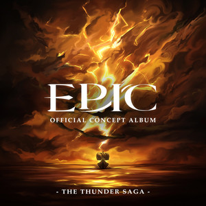

Alors qu'il navigue en mer, Ulysse a une vision de Pénélope. Il lui demande de quelle manière il peut retourner chez lui, et elle lui révèle qu'il ne peut le faire qu'en passant par l'antre du monstre marin à six têtes Scylla, là où même Poséidon ne pénètre jamais. Elle demande alors à Ulysse de la rejoindre dans l'eau, affirmant qu'elle le délivrera de toutes ses souffrances (Suffering).
Ulysse semble céder à ses avances, avant de l'attaquer, révélant qu'elle est une sirène déguisée. Il dévoile que lui et son équipage ont résisté aux chants magiques en se bouchant les oreilles avec de la cire d'abeille, et que pendant leur conversation son équipage a capturé le reste des sirènes. Les sirènes demandent grâce, mais Ulysse jure de ne pas commettre la même erreur qu'avec Polyphème et ordonne à son équipage de toutes les tuer (Different Beast).
L'équipage navigue ensuite jusqu'à l'antre de Scylla, où Euryloque révèle à Ulysse que c'est lui qui a ouvert le sac des vents du dieu d'Éole. L'ignorant, Ulysse lui ordonne d'allumer six torches et les distribuer à des hommes pendant qu'ils naviguent dans l'antre sombre de Scylla. Scylla, attirée par les lumières, mange les porteurs de torches, ce qui permet au navire de s'échapper avec seulement six victimes (Scylla).
Furieux qu'Ulysse ait accepté de sacrifier six de ses hommes, Euryloque prend la tête d'une mutinerie, blessant et emprisonnant Ulysse. Le navire accoste sur l'île la plus proche, qui se trouve être la demeure du dieu soleil Hélios. Malgré les avertissements d'Ulysse, Euryloque abat l'un des bœufs sacrés d'Hélios (Mutiny).
Hélios envoie Zeus pour juger l'équipage, ce dernier oblige Ulysse à choisir entre sa propre vie et celle des autres membres de l'équipage. Ulysse choisit finalement de sacrifier son équipage, et Zeus les tue tous à l'exception d'Ulysse (Thunder Bringer).